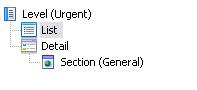
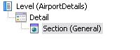

Calls to Elements in Work Withs from Native Mobile Applications Events
Client events in Native Mobile Applications, that is, the events executed on the device (as opposed to those executed on the server-side) have a slightly different grammar than server events. Mostly it is a subset of the grammar of GeneXus events (for example, that of the Web Panels). But it has to include a way to call the elements of the Work With itself. The syntax for every case (calling List, Detail in order to view information, Detail in order to edit -insert/update/delete-) is as follows (below you will have each case examined with an example): SyntaxWorkWithDevicesObject.levelname.List( [parm1, ..., parmN ] ) WorkWithDevicesObject.levelname.Detail( [parm1, ..., parmN ]) WorkWithDevicesObject.levelname.Detail.Insert( [&BC ] ) WorkWithDevicesObject.levelname.Detail.Update( pk_parameters ) WorkWithDevicesObject.levelname.Detail.Delete( pk_parameters ) Where (Syntax conventions) WorkWithDevicesObject Name of the Work With object. When it corresponds to the Work With for Smart Devices object pattern applied to a Transaction, it is made up of WorkWithDevices + TransactionName. (If the Work with Object was created from scratch, as an object that is not related to any transaction, it is the name the user gave to it). levelname Name of the Level where the List or Detail is being called. parmi (For each i between 1 and n), variable or attribute whose value is sent to the List or Detail invoked, in i-th place. The data type must be compatible with the declared i-th parameter in the List/Detail node parm rule. BC (Optional) It is a variable based on the Business Component associated to the transaction whose Work With Detail is being called in order to insert a new information record on the database. The values of the BC variable are taken as a way of initializing the Detail attributes displayed when the call is performed. After the user actually inserts the information in the system, that variable will be returned loaded with those values. So, it is an in-out parameter. If it is not sent, the Detail will be opened with the default values. If the level to which Insert is called is not the first in the BC, you must pass the primary key of the parent level, and optionally the BCLevel with the initialization values. pk_parameters When calling Update or Delete, you have to identify the corresponding record. To do so, you have to send the parameters that constitute the primary key. Note: For Insert, Update, and Delete, you use the Edit layouts. In the Detail Edit layout, you can include the sections you want to view for this. Calling the ListSyntax WorkWithDevicesObject.levelname.List( [parm1, ..., parmN ] ) Supposing that from the List of WorkWithDevicesInputMeasures (based on the InputMeasures Transaction object) you want to reach the List of Work With associated with the Urgent transaction, you will have to start with a button (for example in the Application Bar of the first Work With). You will call the action associated with the UrgentCall button. 
Event 'UrgentCall'
WorkWithDevicesUrgent.Urgent.List()
EndEvent
In the following example, and with the pattern shown, if you wanted to access the second List from any other Native Mobile object, you would code the following:
Event 'WithoutAbout'
WorkWithDevicesAirport.AirportWithoutAbout.List()
EndEvent
Usually, Lists don't need parameters, but this is not a general rule. Calling DetailTo view informationSyntaxWorkWithDevicesObject.levelname.Detail( [parm1, ..., parmN ] ) In this example, from the Section(General) of the Airport Work With you will have to navigate to the AirportDetails Work With (which has no associated BCs, that is, it was not created from a Transaction but from scratch) showing ancillary data of an airport. So, in the events of the first one you will write the following code:  Event 'MoreDetails' AirportDetails.AirportDetails.Detail(AirportOACI) EndEvent In this case, the parameter sent is the primary key of the Airport transaction. Therefore, the object called AirportDetails will have to have it stated in the Rules of the Section(General) node (not in the Detail Rules): parm(AirportOACI); In this case, because you want GeneXus to infer the record directly, you receive it in the primary key attribute of the transaction. Note: This example is also applicable to a Detail with an associated BC (that is, associated with a transaction object), in which case it would be called in View mode. To edit informationSyntaxWorkWithDevicesObject.levelname.Detail.Insert( &BC ) WorkWithDevicesObject.levelname.Detail.Update( pk_parameters ) WorkWithDevicesObject.levelname.Detail.Delete( pk_parameters ) ExampleCalling the Detail of a WorkWith with an associated BC may only imply performing one of the three actions shown in the syntax (Insert, Update and Delete).
Event 'InsertCompany'
WorkWithDevicesCompanies.Companies.Detail.Insert(&Companies)
EndEvent
Videos
|

| Backlinks | |
| Call Variable | Client-side Events in Native Mobile Applications |
| Dynamic Calls in Smart Devices | Category:Native Mobile Applications Events |